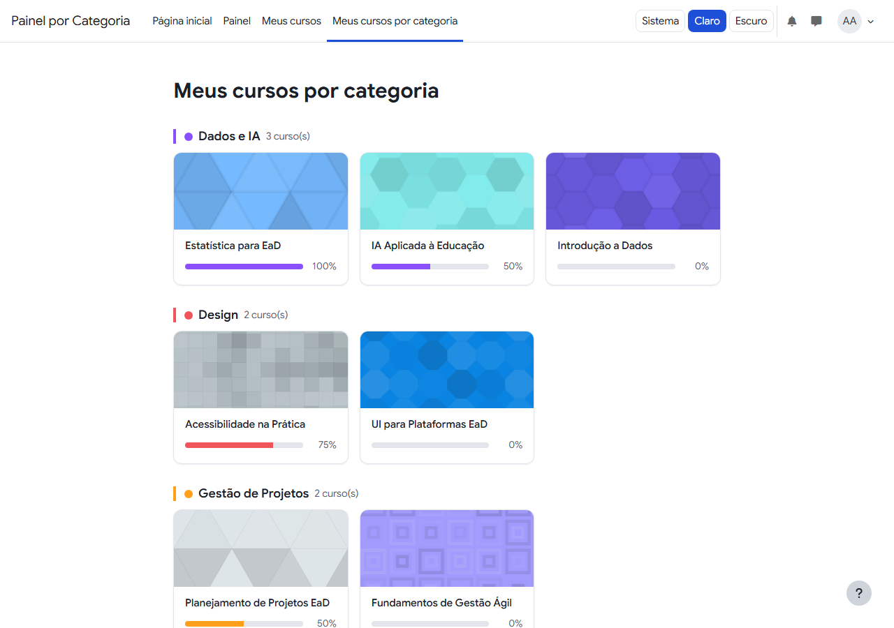
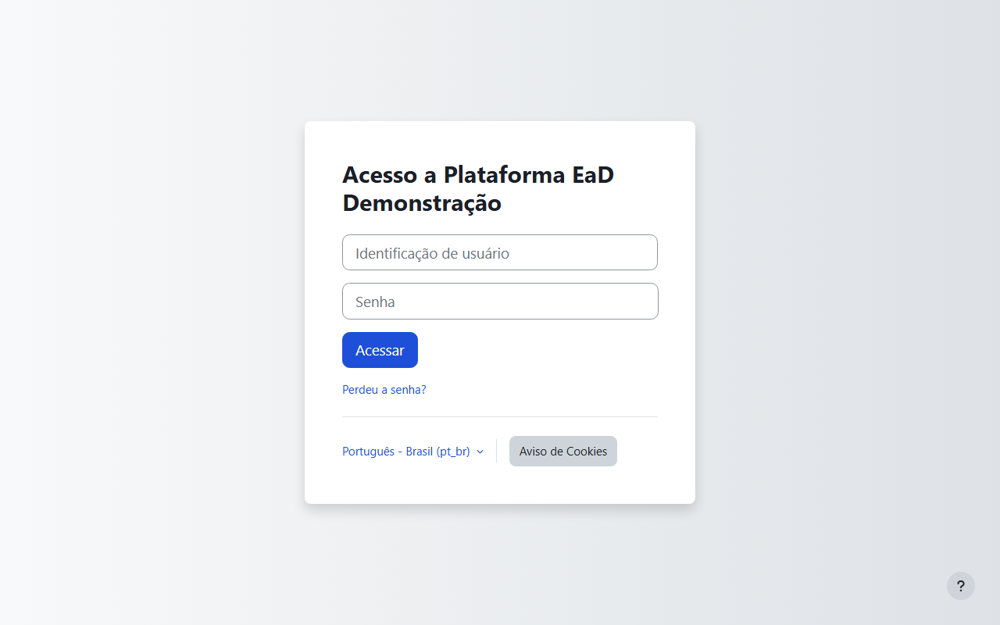
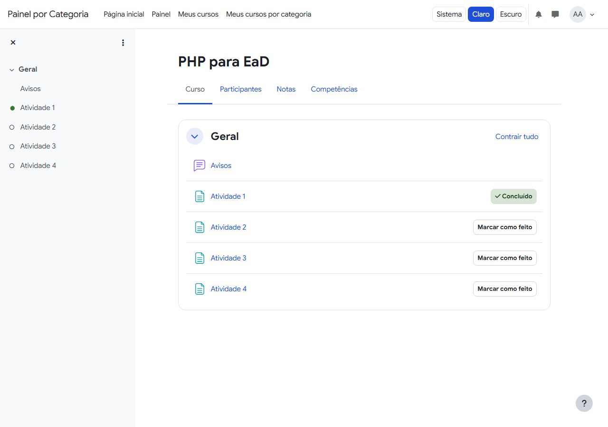
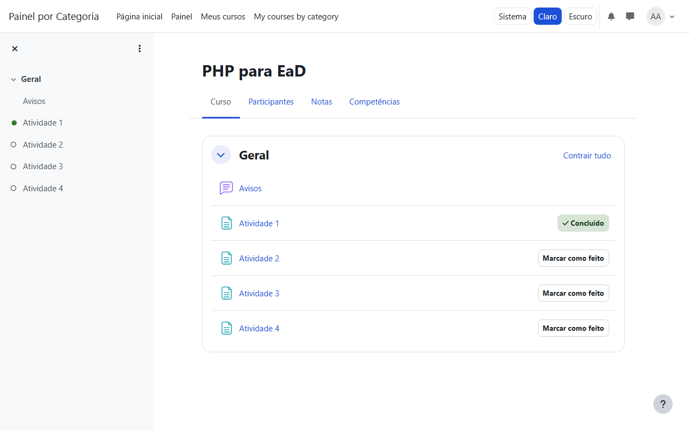
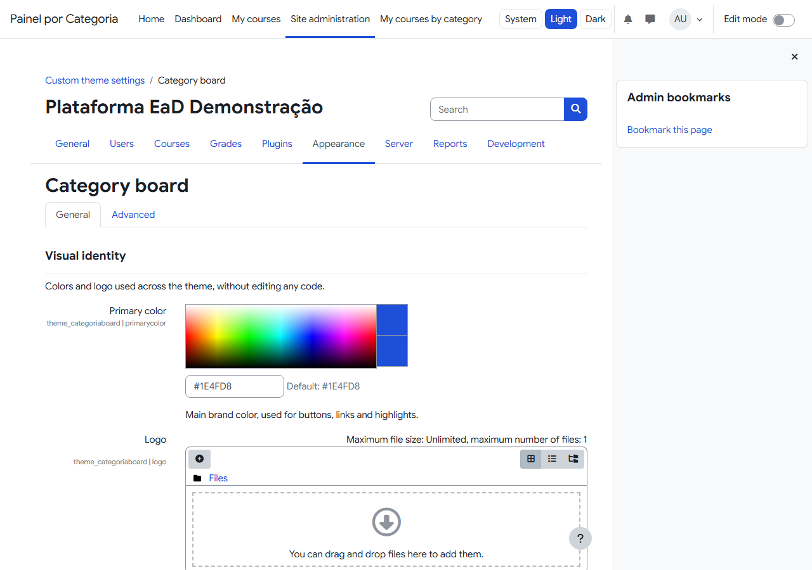
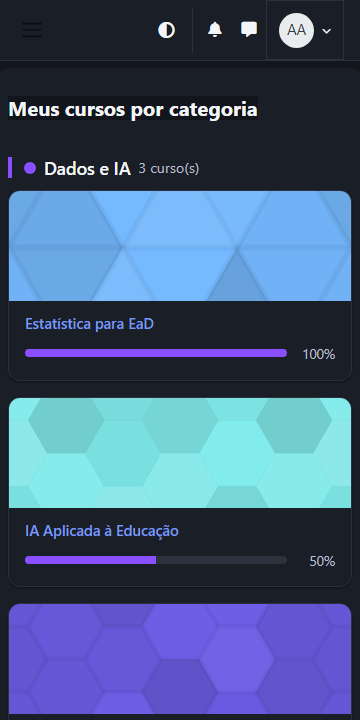

Painel por categoria
Agrupa os cursos matriculados do aluno por categoria, com barra de progresso e percentual em cada card.
Tema filho do Boost · Moodle 4.5 LTS
Um tema de Moodle que agrupa o painel do aluno por categoria de curso, com barra de progresso em cada card, cor e logo configuráveis pelo admin, e um seletor de tema claro/escuro/sistema acessível em todo o site.
Esta página é uma apresentação estática — o
Painel por Categoria em si é um tema para
Moodle (uma plataforma
servida em PHP), instalado em um site Moodle existente a
partir do .zip da release, ou executado
localmente via Docker para desenvolvimento. Nada aqui roda
Moodle no seu navegador.

Agrupa os cursos matriculados do aluno por categoria, com barra de progresso e percentual em cada card.
Cor primária, logo e uma cor por categoria, tudo pelo painel de administração do Moodle — sem editar código.
Seletor de tema no cabeçalho, com persistência entre sessões e sem flash do tema errado ao recarregar.
Barras de progresso com aria-*, foco visível, contraste de cor verificado em ambos os modos.
Grade de cursos em coluna única em telas estreitas; seletor de tema colapsado em um único botão abaixo de 768px.
Playwright + axe-core checam contraste e blocos claros no modo escuro em dezenas de páginas antes de cada release.
Cerca de 30 segundos, sempre no modo claro: login como aluno, o painel por categoria, a abertura de um curso, a troca da cor de uma categoria pelo admin e o resultado aplicado de volta no painel do aluno.
Descrição para acessibilidade: o vídeo, sem áudio, mostra em sequência (1) o login do aluno demo; (2) o painel "Meus cursos por categoria" com rolagem pelos grupos de categorias; (3) a abertura de um curso a partir de um card e o retorno ao painel; (4) o admin abrindo as configurações do tema e trocando a cor da categoria "Programação"; (5) o painel do aluno mostrando a nova cor aplicada aos cards dessa categoria. A cor foi restaurada ao valor original logo após a gravação.
O tema no modo claro e escuro, em desktop e em tela estreita (360px).





As imagens acompanham o tema selecionado acima.
theme_categoriaboard.zip na release mais recente.Detalhes completos — incluindo o plugin opcional de dados de demonstração e o ambiente Docker para rodar o projeto localmente — estão no README do repositório.
4.5 LTS, PHP 8.3, PostgreSQL 16, Boost (Bootstrap 4.6.2)
SCSS, Mustache, JavaScript AMD, PHPUnit, moodle-plugin-ci
Docker, GitHub Actions, Playwright + axe-core